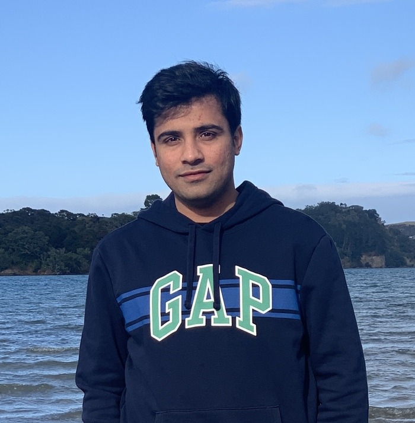

|

|
Professional Experience:
- 10 years of Software Test Automation Experience including Functional and non-functional testing
- Experience in leading a team of automation engineers on-shore (NZ) and off-shore (India)
- Strong skills in automated testing framework development
- Web UI testing and automation with Selenium WebDriver, Java and Cucumber tool
- Mobile applications UI testing and automation with Appium, Java and Cucumber tool
- REST web services testing and automation with Rest assured, Java and Cucumber tool
- Experience in designing & developing testing frameworks following BDD (Behavior Driven Development) using Page Object
Model, Data driven and hybrid approach
- Improved time-to-market by following Shift-left approach, and testing pyramid
- Expertise in CI/CD pipeline implementation for Continues Integration, testing and delivery
- Conducted user experience and user interface (Usability) testing though different means including Hallway testing
- Experience of both Waterfall and Agile (Scrum) Methodologies
- Experience in mentoring and training on Automation framework development from Scratch
- Working understanding of Java, JavaScript, Python, React.Js and React native
- Hands on Experience with Full-stack Web Development with React and React Native Development
|